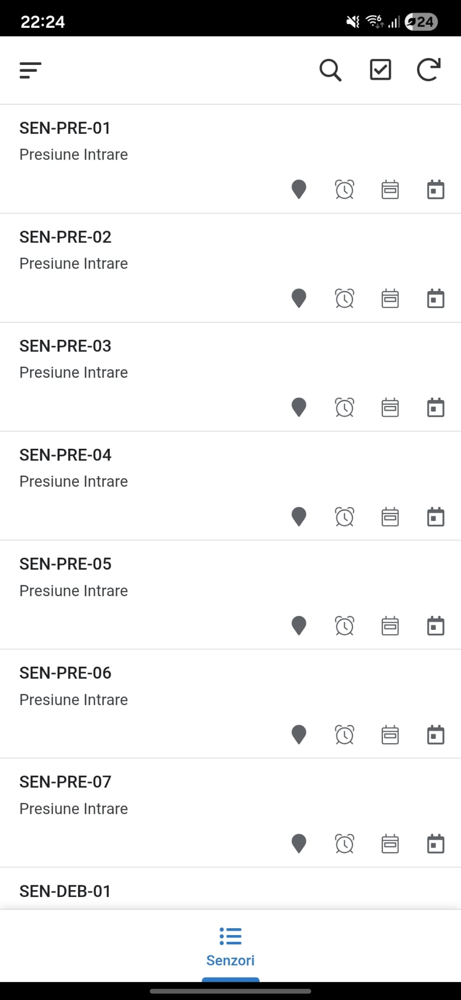
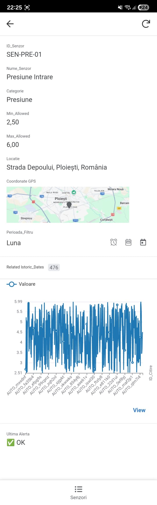

Sisteme Low-Code & Management Enterprise
1. AppSheet Mobile — Sistem Cloud Global de Monitorizare și Management Senzori Telemetrici
Această aplicație mobilă enterprise a fost dezvoltată pe platforma AppSheet cu scopul de a centraliza, monitoriza și gestiona în timp real o rețea extinsă de senzori industriali (senzori de presiune de tip SEN-PRE-XX, senzori de debit SEN-DEB-XX etc.). Soluția elimină timpii morți în caz de avarie și oferă personalului tehnic o viziune analitică clară asupra comportamentului rețelei de echipamente direct de pe smartphone sau tabletă.
Module și Funcționalități Core
- Catalogul Central de Senzori: O interfață curată și optimizată pentru indexarea echipamentelor telemetrice, oferind o identificare rapidă după ID-ul unic și tipul de măsurătoare (ex: Presiune Intrare).
- Mapare Geospațială la Nivel Global (Fără Limite Regionale): Aplicația integrează dinamic API-ul Google Maps direct în tab-ul specific al fiecărui echipament. Sistemul oferă o scalabilitate nelimitată din punct de vedere geografic: fie că un senzor este localizat la o stație din Ploiești sau la un nod logistic din Hong Kong, aplicația randează instantaneu locația pe hartă pe baza coordonatelor GPS asociate. Această trasabilitate globală asigură că echipele tehnice locale pot fi direcționate în mod precis în zona afectată în caz de alertă.
- Analiză Temporală (Time-Series Chart): Generarea dinamică de grafice liniare direct în interfață pentru vizualizarea istoricului de citiri. Sistemul include filtre rapide de granularitate (Ultimele 24 de ore, Ultima Săptămână, Ultima Lună) pentru identificarea rapidă a anomaliilor sau a fluctuațiilor de presiune/debit.
- Gestiunea Pragurilor Critice: Definirea limitelor operaționale sigure prin parametrii
Min_AllowedșiMax_Allowed, corelați cu un modul automat de status (Sistem de Alerte Vizuale de tipOK / Warning / Critical).


2. PowerApps — Sistem Custom de Ticketing, Helpdesk și Management Operational
Acest proiect reprezintă o soluție completă de tip Helpdesk și Task Management, dezvoltată în mediu PowerApps Canvas App pentru digitalizarea și eficientizarea modului în care echipele interne dintr-o organizație raportează, urmăresc și soluționează problemele operaționale sau tehnice. Aplicația este construită pe o arhitectură robustă de gestionare a stărilor, asigurând o trasabilitate perfectă pentru fiecare tichet înregistrat.
Module Implementate și Componente Tehnice
- Dashboard Central de Control (Main Screen): Un panou central unde utilizatorul are acces la o listă agregată a tuturor tichetelor. Sistemul folosește un meniu superior de filtrare rapidă bazat pe stadiul tichetului (
All,New,In Progress,Resolved), actualizând instantaneu colecția de date afișată în galerie. - Sistem Avansat de Filtrare și Sortare: Interfața integrează funcții de căutare dinamică (Search Engine) după titlul sau detaliile cazului, alături de mecanisme de sortare alfabetică sau cronologică, optimizând localizarea rapidă a task-urilor prioritare.
- Formular Dinamic de Înregistrare (New Ticket View): Permite utilizatorilor să introducă detalii complexe (Titlu task, Descriere extinsă a problemei, Departament alocat) și include un modul nativ pentru atașarea de documente justificative sau capturi de ecran relevante.
- Modul de Vizualizare Detaliată și Editare (Edit State): Din cadrul fișei individuale a fiecărui tichet, personalul autorizat poate revizui informațiile inițiale, istoricul raportării și poate actualiza în timp real statusul operativ printr-un control de tip Dropdown corelat direct cu baza de date backend.